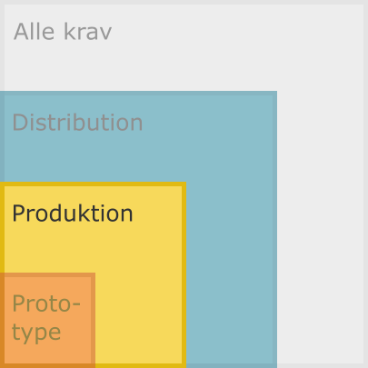

Kategori: Produktion¶

Som nævnt indeholder kategorien Produktion software, der aktivt bruges i forretningen.
Ud over kravene under kategorien Prototype, skal følgende også være i med i leverancen.
Her er altså tale om mere længerevarende projekter, der dermed også kræver mere omtanke og fokus på vedligehold. Længerevarende kode-udvikling medfører som regel også flere implementeringer---ikke nødvendigvis mere kode. Her er også tale om noget, der i lang tid skal understøtte forretningens behov på et niveau, der i høj grad understøtter kvaliteten af dét arbejde, der udføres af det udviklede programmel.
Derfor er der behov for flere værktøjer til udviklere, som hjælper udvikleren med at sikre kvaliteten af koden, både designmæssigt, men også funktionsmæssigt.
Med yderligere dokumentation, hjælper man også andre udviklere på projektet til at bibeholde vedtagne standarder og konventioner, så vel som at give det fulde overblik over alt, hvad der er med i arkivet.
Værktøj til udviklere¶
De værktøj til udviklere har til formål at instruere andre, der skal bidrage til og vedligeholde arkivets indhold, herunder kildekode, test-kode og dokumentation.
Test-funktionalitet¶
Der skal så vidt muligt være test-funktionalitet [en. test suite]---afsondret fra programmellets kode---af alle funktioner i koden.
En test-suite er en organiseret samling af kode, der tester funktionaliteten af koden set fra en brugers synsvinkel.
Test-opsætningen kan være mere eller mindre kompliceret, fra manuel kørsel af test-funktionaliteten til opsætninger, der kan sætte test-miljøer op, der svarer til de miljøer, hvori programmet kan forventes af skulle kunne køre.
Continuous Integration¶
Når ændringer skubbes til den centrale placering [GitHub] af arkivet, skal koden automatisk hentes og relevant test-funktionalitet afvikles.
Opsætningen bruges til at lade udvikleren vide, om koden virker som forventet ved kilden og ikke bare i udviklerens eget miljø. Dette kaldes continuous integration [CI].
GitHub har et integreret CI-værktøj kaldet GitHub Actions. Actions kan køre, når en bruger laver ændringer i arkivet eller på fastlagte tidspunkter. Når betingelserne er opfyldt, starter platformen et bruger-defineret workflow op på en virtuel maskine på platformens servere.
Man kan tilføje workflows gennem platformens web-brugergrænseflade, hvorved
GitHub opretter følgende mappestruktur i roden af arkivet:
.github/workflows/. workflows-mappen indeholder så de workflows, man har
oprettet. Workflows er bare .yaml-dokumenter med en bestemt struktur og
indhold. Man kan således oprette workflows bare ved at tilføje workflow-filer i
denne mappe, og GitHub vil selv opfange dem og køre dem efter forskrifterne i
hver enkelt workflow-fil.
Teknisk dokumentation¶
Teknisk dokumentation er en bred betegnelse for en række forskellige ting, som primært er henvendt til udviklere, men også til drifts-ansvarlige, eller folk, der har brug for at vide, hvordan programmellet indgår i et større systemlandskab.
Der kan også være behov for at beskrive programmellet arkitektur i sig selv, snitflader mod andre systemer; begrundelser herfor og tegninger/illustrationer heraf.
Det nødvendige detalje-niveau afhænger til dels af formålet med leverancen. Det er dog nødvendigt at medtage så meget af det som muligt, i større eller mindre omfang, så vi får en fast ramme, hvorunder vi beskriver tingene.
Semantisk versionering¶
Kodeudgivelserne skal være styret og bruge konventionen for semantisk versionering til nummerering af programmeludgivelserne.
Vedligeholdelsesspor¶
Der skal være vedligeholdelsesspor [en. maintainance branches] i Git-arkivet
ved siden af hovedsporet1, som indeholder seneste
minor version navngivet efter deres minor-version, eksempelvis 1.3.0, og som
modtager rettelser [en. patches] fra den løbende udvikling. Hver
patch-version hører til i den tilsvarende minor-versions vedligeholdelsesspor
og får et Git-tag med den pågældende patch-version, eksempelvis 1.3.2.
Illustrationen nedenfor viser hovedsporet og to maintainance branches, der hver især modtager rettelser [på engelsk kaldet backporting] fra hovedsporet.
o---o------o---o---o---o---o---o---o---o---o---o---o main <-- Hovedspor
\ \ \ \ \
\ \ o-------o-------o---o 1.4.0 <-- Vedligeholdelsesspor for minor version 1.4.0+
\ \ | | |
\ \ 1.4.0 1.4.1 1.4.2 <-- Mærkater [en. tags] til de enkelte patch-versioner
\ \
o------o---o 1.3.0 <-- Vedligeholdelsesspor for minor version 1.3.0+
| |
1.3.0 1.3.1 <-- Git tags til de enkelte patch-versioner
Disse rettelser er, som den semantiske version fortæller, kun småtilpasninger og korrektioner af fejl [en. bugs]. Backport'ede rettelser ændrer altså ikke væsentligt på programmellets funktionalitet, men er er bagud-kompatible.
Er man en bruger af en specifik minor-version af programmellet, og foregår
installationen ved at hente og installere direkte fra GitHub(eller andetsteds),
så kan brugeren med fordel tilføje vedligeholdelsessporet til de Git-branches,
der automatisk bliver hentet, når man skriver git fetch eller git pull i
sin terminal. På denne måde slipper man for at skulle manuelt udvælge seneste
git-revision og dermed skifte til en tilstand, der i Git-terminologi kaldes
for 'detached HEAD'.
Eksempel
Brugeren ønsker at hente seneste opdateringer ned på vedligeholdelsessporet `1.4`. Programmellet installeres i forvejen fra Git-arivet på GitHub. Kommandoerne `git fetch` og `git checkout` kan bruges på følgende måde, hvis [kriterierne er opfyldt][git-scm-book_tracking-branches]:git fetch
# remote: Enumerating objects: 549, done.
# remote: Counting objects: 100% (507/507), done.
# remote: Compressing objects: 100% (272/272), done.
# remote: Total 549 (delta 302), reused 394 (delta 224), pack-reused 42 eceiving objects: 97% (533/549), 1.20 MiB
# Receiving objects: 100% (549/549), 1.49 MiB | 1.23 MiB/s, done.
# Resolving deltas: 100% (309/309), completed with 42 local objects.
# From https://github.com/SDFIdk/FIRE
# 4fca6e3..d0a5712 1.3 -> origin/1.3
# * [new branch] 1.4 -> origin/1.4
# + fe12a13...afed990 gh-pages -> origin/gh-pages (forced update)
# 8a93e18..5167a26 master -> origin/master
# * [new tag] fire-1.4.0 -> fire-1.4.0
git checkout 1.4
# Previous HEAD position was 4fca6e3 Merge pull request #531 from SDFIdk/backport-530-to-1.3
# Switched to a new branch '1.4'
# Branch '1.4' set up to track remote branch '1.4' from 'origin'.
Automatisk sammenfletning af hovedspor-revisioner på vedligeholdelsesspor med GitHub Actions
Som illustreret ovenfor, er det ikke ualmindeligt, at en væsentlig andel af revisionerne foretaget på arkivets hovedspor, skal overføres/sammenflettes [en. merge] på et vedligeholdelsesspor.
Ved hjælp af GitHub Actions kan man med et workflow automatisere sammenfletningen af de revisioner, man ønsker at backport'e til et givet vedligeholdelsesspor.
I Fikspunktregistret (FIRE) anvender vi dette workflow, som i dokumentationen holder øje med, hvilke revisioner, man ønsker at backport'e til hvilke vedligeholdelsesspor.
1: Standard-navnet i nye Git-arkiver var tidligere
master, men er skiftet til main. Som med alle grene i versions-historikken
er det muligt at omdøbe den. Det lader dog ikke til at være normalt, og
standard-navnet er alment kendt og derfor en god konvention for navnet til
arkivets hovedspor.